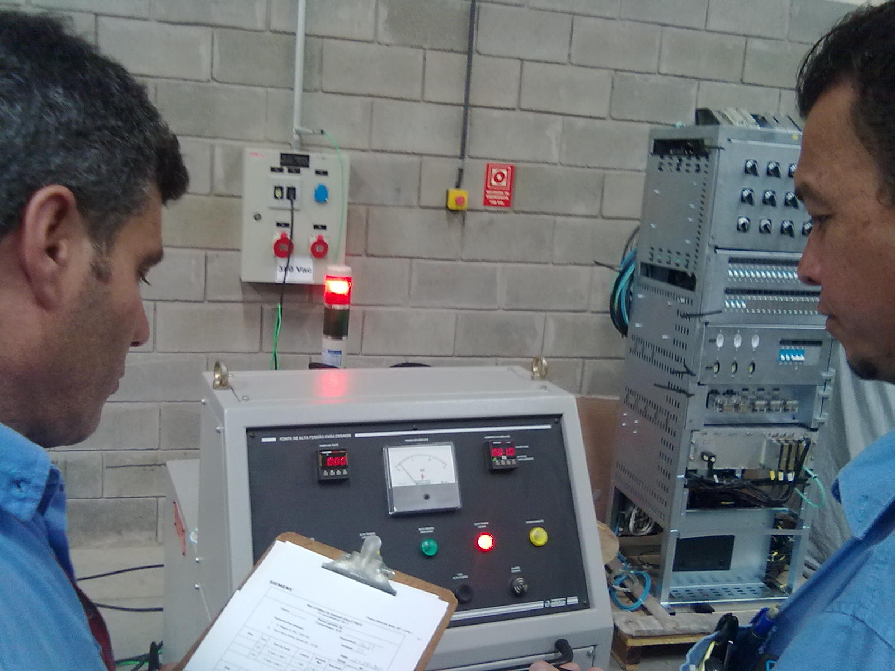

This site is a personal project created by Zoir Germinari,
a Brazilian electrical engineer and software developer. The site is designed to showcase various projects and skills in web development, electronics, and programming. Thank you for visiting my site!